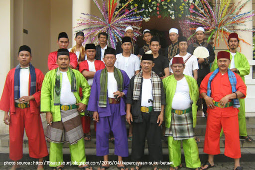

BUDAYA
Walaupun depok termasuk kedalam wilayah atau provinsi jawa barat tapi bahasa yang digunakan didaerah depok adalah bahasa betawi karena kebanyakan orang depok adalah orang pindahan atau migrasi dari jakarta. Suku Betawi itu sendiri berasal dari hasil perkawinan antaretnis dan bangsa dimasa lalu.

Secara biologis, mereka yang mengaku sebagai orang Betawi adalah keturunan kaum berdarah campuran aneka suku dan bang sayang didatangkan oleh Belanda ke Batavia. Apa yang disebut dengan orang atau suku Betawi sebenarnya terhitung pendatang baru di Jakarta. Kelompok etnis ini lahir dari perpaduan berbagai kelompok etnis lain yang sudah lebih dulu hidup di Jakarta, seperti orang Sunda, Jawa, Arab, Bali, Sumbawa, Ambon, Melayu dan Tionghoa. Seni dan Kebudayaan Budaya Jakarta merupakan budaya mestizo, atau sebuah campuran budaya dari beragam etnis.
Sifat campur-aduk dalam dialek Betawi adalah cerminan dari kebudayaan Betawi secara umum, yang merupakan hasil perkawinan berbagai macam kebudayaan, baik yang berasal dari daerah-daerah lain di Nusantara maupun kebudayaan asing.